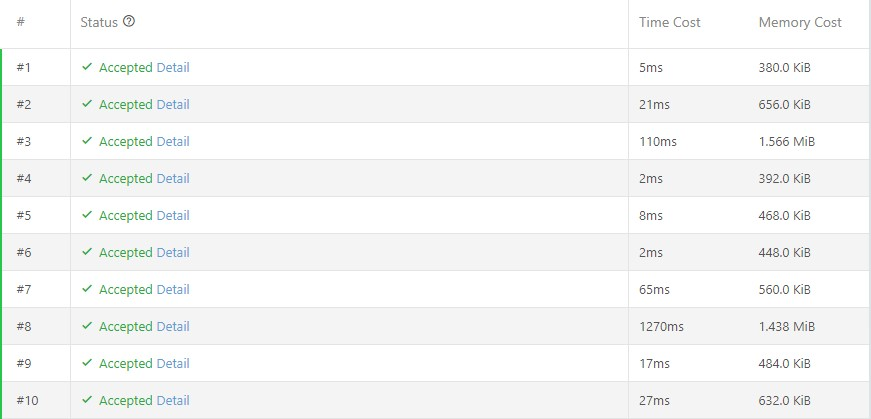
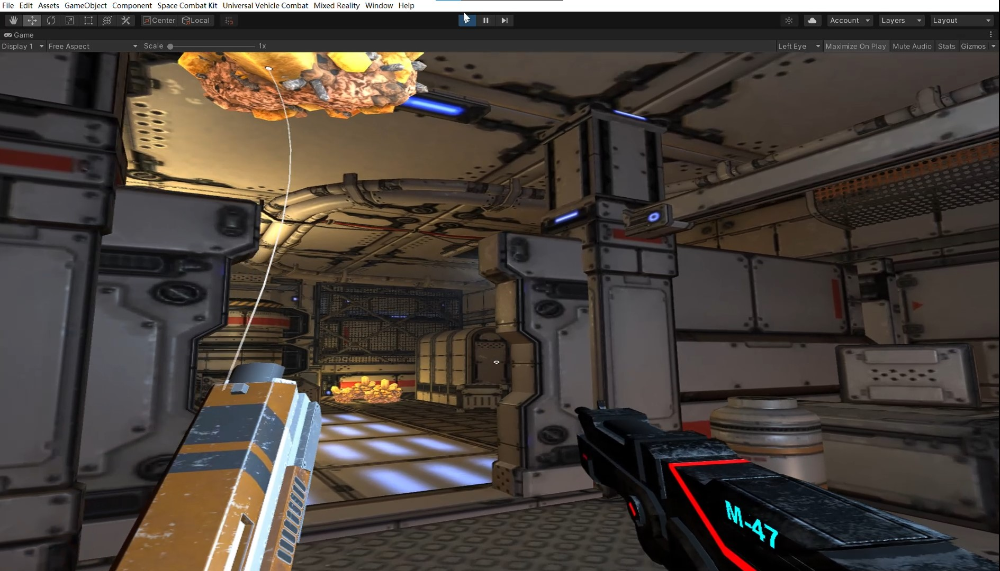

Skills and Experience
⭐ Data Analytics
üëâ Sales Analyst Intern at TechSmith Corporation


From May 2023 to August 2023, I had a super fantastic internship experience at TechSmith Corporation (TSC). The two pictures above are shot at the TSC intern vs mentor pickel ball event. As an example, these picutures bring up one of the biggest highlights I experienced at TSC other than working: trust.
Trust takes up a large portion of work life during my internship at TSC. Because of trust, I was given full admin access to the TSC data pipelines and the site collection admin access to the TSC SharePoint pages at my request. Because of trust, I could arrange a meeting with anyone in the organization anytime as long as there is an empty time slot. Because of trust, I could dig deep to anything I found useful to the project or to the organization, no matter if it was a success or not. With pure technical skills and basic team communication, jobs can be done. When trust within the group comes into play, jobs can be done with excellence and potential bonus findings. Building up the trust with the collegues is both beneficial to all individuals and important for the team as a whole in the work life. Thanks to this internship opportunity at TSC, I believe the sense of trust will help me a lot in my future career life.
Every time a new version of the company product is released, the product information on the partner eCommerce store website is supposed to be updated accordingly. However, the company partners will not always have instant reactions. To find out which listed products need to be updated or removed, I reached out to the partners to make a request of their product data. With that, I can make comparisons and get the result. However, some of them could not provide such data out of some reasons. In that case, I used Python scripts and PyInstaller to build a simple executable file which is capable of automatically scrape the JavaScript-generated data from the partner eCommerce store website. Moreover, since the script is packed into an executable file, personnel without technical backgrounds can still run the script without configuring the computer environment. With its easy-to-use and powerful features, the tool enables my collegue to complete the data gathering process with ease. As an estimation, the program can save an hour on data extraction every 100 data records, comparing to manual data gathering.
During my summer internship, I was also responsible for generating a quarterly workload analysis report for the entire sales department. The sources of data include: SalesForce, PureCloud, ZenDesk, and PriceQuote. Though a template of some previous quarterly workload analysis reports are provided, I was able to use Pandas, Altair, Microsoft Excel, and Microsoft Power BI to generate different kinds of visualizations. In general, they include pivot tables, bar plots, box and whisker plots, and line plots grouped by different sales regions, time, and individuals. The entire report is completed independently within three days and delivered in a form of powerpoint slides.
As the company is transferring the sales mode to SaaS, I was responsible for separating the legacy site license agreements with the non-legacy ones. With this, the core management team can evaluate the current progress of transition and make plans on how to change the service to the renewing clients. Basically, I used Microsoft SQL Server Management Studio and SQL queries to get the desired data and make sure the data to be imported to Microsoft Excel is scalable. After that, I set up some pivot tables and slicers as the final data visualizations. For the sake of convenience, I stored the workflow into the data pipeline using Microsoft Azure Data Factory. In that way, the data can be regularly updated and the report can be easily generated in the future.
Aside from data analysis works, I was also responsible for some database management works. One of the projects I did during the internship is migrating a huge number of files from a remote drive to SharePoint Online Document Libraries. In addition, the metadata such as create date, author, etc. need to be retained. There are a lot of phases in the project. At first, since the time needed to access a specific file in the remote drive is fairly long, I wrote a shell script to traverse through all the files in the remote drive and generate a local indexer which contains all the information of the files. This indexer is similar to a dictionary in Python or an unordered_map in C++. With the indexer, I can locate a file instantly given the name. This is useful if further filters will be applied based on the file content or its metadata. After that, I was trying to use Windows Robocopy to copy the files to OneDrive with multiple threads. This approach is fast, but the copied files will only keep the metadata in the local file explorer. On OneDrive, the metadata are not kept. Finally, I decided to utilize SharePoint Migration Tool provided by Microsoft. This tool can effectively keep the metadata of the files and save local drive storage space, at a cost of speed. The entire project was completed individually from initiation to deployment. Though there are some ideas that were not applied in the final approach, the project itself is successful.
üëâ Business Status of American Airlines During Pandemic
This project is an independent project initiated by a UMSI course: Data Manipulation and Analysis (SI618). The time period of the project is around 1 month from Nov. 2022 to Dec. 2022. In the project, I used three datasets downloaded from Kaggle for analysis: COVID-19 spread data, American Airlines (AA) stock price and deal volume data from 2005 to 2022, US domestic flight delay data. The goal of this project is to answer three questions: Is there any seasonal effect in any of the datasets? Is there any significant impact from the pandemic on the business status of AA? A flight delay event can be due to joint causes, what are some patterns of the delay cause when a delay happens?
In the project, multiple languages and libraries are used, including: Python, SQL, Pandas, Scipy, Scikit-learn, Spark, Seaborn, Matplotlib, and Plotnine. A full report can be viewed from HERE.
Following are some important visualizations and results obtained from the analyses. In the first image, it shows the cross correlation between Covid cases and
AA's stock close price in the first six months, 2020. In the second image, it shows the clusters of delay causes in two dimension visualization using K-means clustering (k=3).
⭐ Software Engineering
üëâ Database Construction based on KD-treeThis Python project is an independent project initiated by a UMSI course: Intermediate Programming (SI507). The development time is about one month from Nov. 2022 to Dec. 2022. There are basically three parts in the project: web scrapping, data retrieving using Twitter API v2, and data structure constructing. Detailed project description can be found here.
Here also is a demo video for this project. The video is about 7 minutes long. Feel free to check it out.
1. For web scrapping, Python built-in method requests.get() is used multiple times to get the html source codes from multiple Wikipedia pages. Cache files are used to avoid long runtimes in repeated code executions. Python library BeautifulSoup is used to capture desired data in the html source codes.
2. For data retrieving using Twitter API v2, two types of data are retrieved with Twitter API v2: user information and user following information. Based on the sample codes provided by Twitter, modifications are made in the codes to fulfill the purpose of the project. Up to this point, 1106 records of data in total are gathered for future data structure construction.
3. For data structure constructing, KD-tree is used to organize and store data. Several class methods including: node search, node insertion, range search, etc. are implemented.
üëâ Data Structure Projects Using C++
The projects are a set of independent projects initiated by a UM-SJTU Joint Institute course: Data Structures and Algorithms (VE281 or ECE2810J). The development time is about 3 months from May. 2022 to July. 2022. Five projects are included in the project set: sorting, hash table, KD-tree, and P2P shortest path.
1. In the sorting project, six kinds of sorting algorithms are implemented with C++: bubble sort, insertion sort, selection sort, merge sort, non-in-place quick sort, and in-place quick sort. Below is a screenshot of code tests. The tests are given to all six sorting functions and the time/memory costs are recorded.
2. In the hash table project, an STL-like hash table data structure is implemented with std::unordered_map. The table size is dynamic and only takes prime numbers. Whenever the hash table is full, the table sized is enlarged and the data are rehashed. The hash function takes the scheme of "hashing by modulo". Here is a screenshot of code tests along with the time/memory costs.
3. In the KD-tree project, a self-balanced KD-tree is implemented with C++ class. Several functions are implemented: node search, node insertion, node deletion, range search, balance tree, tree copy, tree deletion. Here is a screenshot of code tests along with the time/memory costs.
4. In the P2P shortest path project, Dijkstra's Algorithm is modified to find the shortest path between two points in a 2D graph. The edge weight can be any integers, including negative integers, which is the reason of modifying the algorithm. Here is a screenshot of code tests along with the time/memory costs. 
5. In the final project, the previous four project codes are integrated into a single android application. The application uses quick sort algorithm to sort the data. It uses the hash table data structure in the search function. It also uses the 2D-tree range search to search the neighbors given the coordinates and the range. Last but not least, it uses P2P shortest path algorithm to find the shortest path between two points. A quick demo can be found here. Below is a screenshot showing the range search function.
üëâ Algorithm Intern at Xue Lang Yun Tech. Co. Ltd
From Jan. 2022 to Apr. 2022, I work as an algorithm intern at Xue Lang Yun Tech. Co. Ltd. During the time, I developed and deployed a machine-learning algorithm platform for industrial data prediction and optimization as a back-end developer, using scikit-learn library and Python. The product was then used by a big automotive company in China: Greeley. Also, I was assigned to a client from a national firm: China Railway Engineering Corporation as a technical supportor. Basically, my job was to regularly check in with the client, record the problem from the client and solve them.
⭐ Extended Reality
üëâ AR Shooting
The project is initiated by me and supervised by SJTU Smart Display Lab. The project lasts one year from May. 2021 to Apr. 2022. "AR Shooting" is a multi-player shooting simulation application run on Android platform. There are two versions for the app: VR and MR. The VR version is developed with Unity, C#, and Google Cupboard SDK, while the MR version is developed with Unity, C#, and Google AR Foundation. Both versions support LAN party multi-player game. But for the MR version, the device installed with the app can be mounted on a model gun so that the user can actually shoot a gun and gain simulated feedback such as recoil. As the project leader, I am responsible for developing VR version, developing server communication function, drafting proposal and reports, organizing team meeting, gatherinig learning materials, allocating resources, etc. And of course, I also take part in all other activities in the project. Here are some screenshots of the application.
The first pic shows the VR version of the app. The second pic shows the MR version of the app. The third pic is an image showing the structure of the model gun.
The fourth pic shows me using the MR system.
The team also gets to the semi-final in China Virtual Reality Industry Innovation Competition. The competition is held by China Virtual Reality Industry Association and
is open to companies and college labs. It examines the competitors based on three aspects of their product: business, technology, and innovation.
Luckily, my team is the only team that comes from a university lab, while all other teams are companies big and small from all over China.
One of the largest extended reality company: Ximmerse is among the competitors. Here is some photos taken during the semi-final.
üëâ Lost in Galaxy
"Lost in Galaxy" is a VR first-person shooting game run on Windows platform. The project is initiated by an SJTU course: VR/AR Design and Development (CS085) during Sep. 2021 and Dec. 2021. The game is developed using Unity, C#, and Microsoft Mixed Reality Tool Kit. As the main developer of the project, I am responsible for all the script coding, including the bullet effect, avatar movement, interactions, prefab spawn, sound effect, etc. The plot of the game is quite simple: the main character is trying to find her missing friend, who has been off the radar for several months. After arriving at an abandoned space station, the main character restores the power and found a creepy alien spying on her. The main character killed the alien but only to find that it was actually her missing friend. Here is a demo video of the game. 
With the game, my team won the third prize of SJTU Industrial Scenario Digitizing Competition, which is a game design and development competition on campus.
⭐ Web Developing
üëâ Introducing a GameThis project is an independent project initiated by a UMSI course: Design of Complex Websites (SI539). The time used on this project is around 3 months from Oct. 2022 to Dec. 2022. In the project, I made a four-page website for a strategy game: This War of Mine. Here is a worksheet I draft for the project. And here is a link to the deployed page.